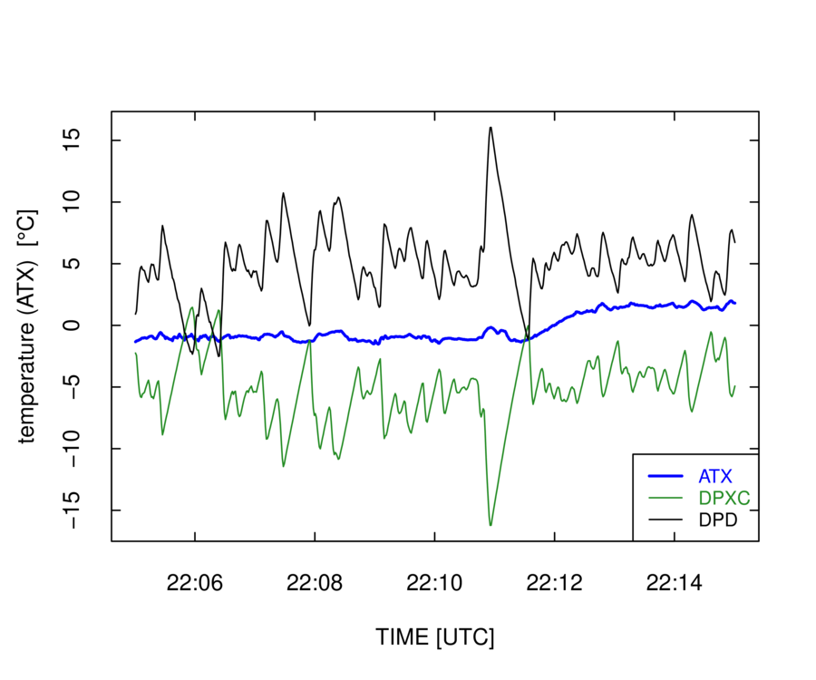
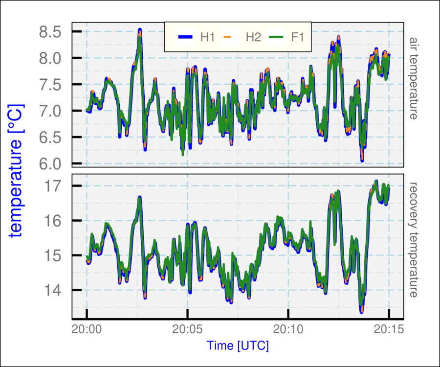
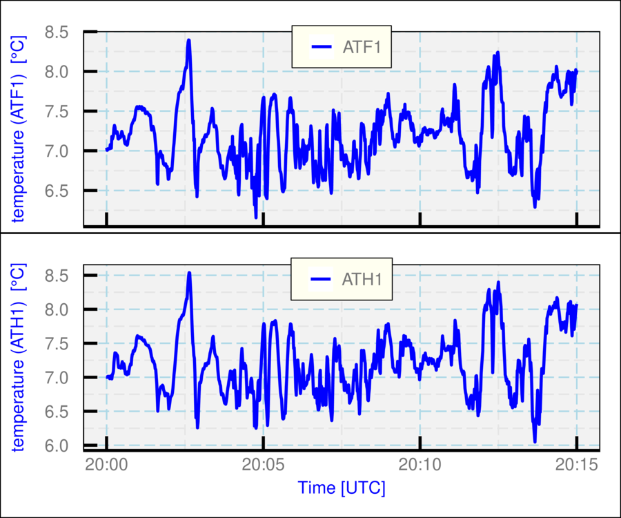

Next: 5. Variance Spectra Up: R4RAF Previous: 3. Overview of Ranadu
This chapter includes additional details about the plot functions available in Ranadu.
When constructing plots, the use of “pipes” makes the logic clear and is recommended, so that is described first. All the code sequences described here can be implemented by saving the result from each step and then providing it to the next step, but pipes support the transmission of the result of a calculation to the next stage in the calculation without the need for intermediate storage. They are supported using the “%>%” argument, which is enabled by the “magrittr” package for R. Perhaps the strongest argument for using pipes is that they make the logic of plot construction clear. You start with a data.frame, optionally construct new variables, make appropriate selection of variables and the time interval, apply filters to accept only data meeting particular tests, and then construct the plot using the resulting tailored data.frame. Here is an example, where the data.frame is piped to “select()” (part of the dplyr package that passes on only the listed variables) and where the result is then piped to “Ranadu::selectTime()” where only the specified time range is transmitted forward. The result is finally piped to Ranadu::plotWAC(), where the first argument is a data.frame. That is supplied by the pipe. The result is shown in Fig. 4.1. Alternately, ggplotWAC() could be used to produce a similar result. In addition to showing the explicit steps in the processing chain, code like this ensures that the plot will be constructed the same way if the code is re-used or moved.
More information on some of the utility functions used or available
when constructing plots is provided in the following list:
## Generating R code:
library(magrittr)
Ranadu::getNetCDF(fname, Variables) %>% ## load the data.frame
dplyr::filter(TASX > 90) %>% ## limit based on airspeed
dplyr::select(Time, ATX, DPXC) %>% ## select the variables to plot
Ranadu::Rmutate(DPD = ATX - DPXC) %>% ## add the dewpoint-depression DPD
Ranadu::selectTime(220500, 221500) %>% ## set the time range
Ranadu::plotWAC(col=c('blue', 'forestgreen', 'black')) ## construct the plot

“Ranadu::plotWAC( )” is designed primarily for time-series plots,
but scatterplots can also be generated. In that case, the first two
variables in the data.frame should be the variables for the scatterplot,
not the Time variable, and an explicit label “xlab=xxx” should
be supplied. Here is an example:
## Generating R code:
Data %>% selectTime(220000, 221500) %>%
dplyr::select(ATX, DPXC) %>%
plotWAC(xlab='ATX', type='p')
It is often desirable to combine several plots into a single plot. There are several ways to do this with Ranadu routines:
The “layout()” function in base-R can be used. Here is an example. The matrix layout can also be used to display plots in multiple columns or in multiple rows and columns.
## Generating R code:
layout(matrix(1:2, ncol=1), widths=c(8,8), heights=c(5.5,8))
op <- par (mar=c(2,4,1,1)+0.1, oma=c(1.1,0,0,0))
Data %>% dplyr::select(Time, ATX) %>%
plotWAC(ylab=expression(paste("T [", degree, "C]")))
op <- par (mar=c(5,4,1,1)+0.1)
Data %>% dplyr::select(Time, WIC) %>%
plotWAC(ylab=expression(paste('W [m/s]')))
The function Ranadu::ggplotWAC( ) is based on the ggplot2 package for R, which provides extensive plotting capabilities and is highly recommended. What is provided via ggplotWAC( ) is a very simplified and restricted approach, but it might be useful in preliminary applications. See this URL for information on ggplot2. The Ranadu routine provides two approaches to multiple plots:
## Generating R code:
Project <- 'WECAN' ## faceted plot with ggplotWAC()
Flight <- 5
V <- c('ATH1', 'ATH2', 'ATF1', 'RTH1', 'RTH2', 'RTF1')
fname <- sprintf('%s%s/%srf%02d.nc', DataDirectory(), Project, Project,
Flight)
suppressWarnings (
getNetCDF(fname, V, 200000, 201500) %>%
ggplotWAC(panels=2,
col=c('blue', 'darkorange', 'forestgreen'),
ylab=expression(paste('temperature [', degree,'C]')),
lwd=c(1.5, 0.8, 1), lty=c(1,2,1),
labelP=c(' air temperature', ' recovery temperature'),
labelL=c('H1', 'H2', 'F1'),
legend.position=c(0.5,0.95)
)
)

## Generating R code:
## viewport-plot with ggplotWAC()
DG <- getNetCDF(fname, V, 200000, 201500)
with(DG, ggplotWAC(data.frame(Time, ATH1), position=c(1,2)))
with(DG, ggplotWAC(data.frame(Time, ATF1), position=c(2,2)))

A scatterplot like that in Fig. 4.2 often is used to show a two-dimensional display of where events occur. Such plots are useful when the number of events is small, but for large numbers of events the overlap of points can obscure relationships. The base-R function “smoothScatter()” is one option for plotting the density of points in such cases. Another is the “filled.contour()” function. Ranadu provides a third option in the function Ranadu::contourPlot(). The number of bins, colors, and linear vs. logarithmic density intervals can be provided as arguments to this function, although the defaults often work acceptably. The following figure and code illustrates the use of this plot. Additional more elegant solutions are provided by the ggplot2 package.
## Generating R code:
getNetCDF(fname) %>% dplyr::select(ATX, DPXC) %>%
contourPlot(title='WECAN flight #5')
Ranadu provides the “binStats()” function to compile variable characteristics needed to generate plots like error-bar plots and box-and-whisker plots. The input should be a data.frame whose first two columns specify the expected respective ordinate and abscissa variables. Each row in the data.frame is assigned to a bin on the basis of the value of the second variable, and for each bin the mean, standard deviation, and number of events are accumulated for values of the first variable in the data.frame. The output from binStats() is a new four-column data.frame where the respective columns are the mean value of the abscissa for each bin, the mean value of the ordinate for all events in the bin, and corresponding standard deviation, and the number of events in the bin.
The following code creates Fig. 4.8, an
example of creating a box-and-whisker plot. When used with the argument
“addBin = TRUE”, binStats instead returns a modified data.frame
with a variable “BIN” added that is suitable to use when grouping
in ggplot aesthetics.
## Generating R code:
getNetCDF(fname) %>%
Rmutate(DPD=ATX-DPXC) %>% ## define dew-point-depression variable
dplyr::select(DPD, GGALT) %>%
binStats() %>%
ggplot(aes(x=xc)) + geom_point(aes(y=ybar), color='blue') +
geom_errorbar(aes(ymin=ybar-sigma, ymax=ybar+sigma)) +
xlab('geometric altitude [m]') +
ylab(expression(paste('dew point depression [', degree, 'C]'))) +
theme_WAC()
## Generating R code:
getNetCDF(fname) %>%
dplyr::select(DPXC, GGALT) %>%
binStats(addBin = TRUE) %>%
ggplot() + geom_boxplot(aes(GGALT, DPXC, group=BIN),
color='blue', na.rm=TRUE) +
theme_WAC()
Ranadu incorporates the ability to plot a set of measurements on the background of a skew-T diagram. The background is non-standard and is described in detail in this document. The “Ranadu::SkewTSounding()” function should be called with a data.frame containing measurements of pressure, temperature and dewpoint, which may be named either (“PSXC”, “ATX”, “DPXC”) or (“Pressure”, “Temperature”, “DewPoint”). A skew-T background is generated using the Ranadu data file “skewTDiagram.Rdata” and the values from the input data.frame are optionally averaged in pressure intervals and then plotted on this background.
## Warning: Removed 2 rows containing missing values (geom_path).
## Warning: Removed 2 rows containing missing values (geom_path).
## Generating R code:
Project <- 'PREDICT'
Flight <- 11
fname <- sprintf ('%s%s/%srf%02d.nc', DataDirectory(), Project,
Project, Flight)
getNetCDF(fname) %>%
selectTime(0, 150000) %>%
SkewTSounding(AverageInterval=10)
The Ranadu function “plotSD()” displays the size distribution measured by various probes that produce arrays of measurements. The data.frame containing these measurements is special in that the column corresponding to a variable name like “CCDP_RPC” is a two-dimensional vector. This makes the data.frame inconsistent with the “tidy” structure and with the structure required for a “tibble”, so some special considerations are required if an analyst wants to use only tidy data. In this section, those considerations are not discussed further because the “plotSD()” function assumes Ranadu-style data.frame conventions.
“Ranadu::getNetCDF()” accepts variable names like “CCDP_”, in which case it searches for the first variable starting with that name. This avoids the need to know the location of the CDP probe in various projects. However, if there are multiple probes with the same prefix name, they need to be specified in the variable list used to construct the data.frame.
An example, Fig. 4.10, shows code that will construct a plot of the size distribution from several probes. The “exceedance” is added when the argument “CDF=TRUE” is used; it is the complement to a cumulative distribution and shows the fraction of particles that exceed the plotted size. The four numbers returned from the function are the mean concentration, mean diameter, standard deviation in the diameter, and liquid water content under the assumption that all particles are liquid. It is also possible to construct a plot of the distribution in liquid water content, as shown in Fig. 4.11. See “?Ranadu::plotSD” for more options including alternate specification of the size limits, bins to include, and log vs linear axes.
## Generating R code:
getNetCDF('/Data/CSET/CSETrf06.nc', c('CCDP_', 'C1DC_', 'CUHSAS_')) %>%
selectTime(173000, 173500) %>%
plotSD(CellLimits=NA, logAxis='xy', CDF=TRUE)
## Generating R code:
## [1] 700.6157510 2.0525220 7.2263178 0.4802542
## Generating R code:
getNetCDF('/Data/CSET/CSETrf06.nc', c('CCDP_', 'C1DC_', 'CUHSAS_')) %>%
selectTime(173000, 173500) %>%
plotSD(CellLimits=NA, logAxis='xy', LWC=TRUE, CDF=TRUE)
## Generating R code:
## [1] 700.6157510 2.0525220 7.2263178 0.4802542